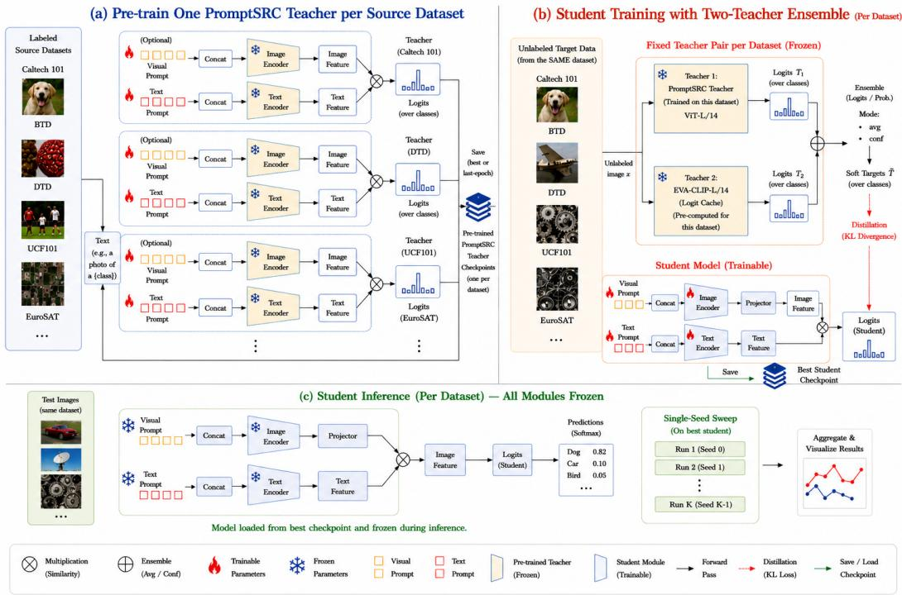
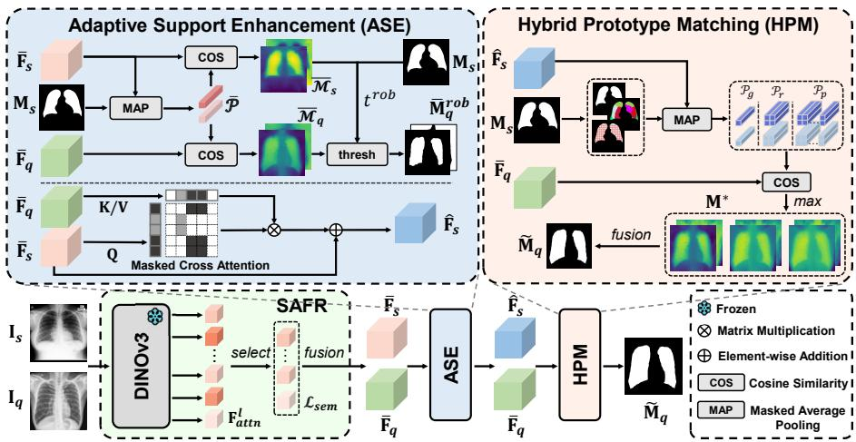
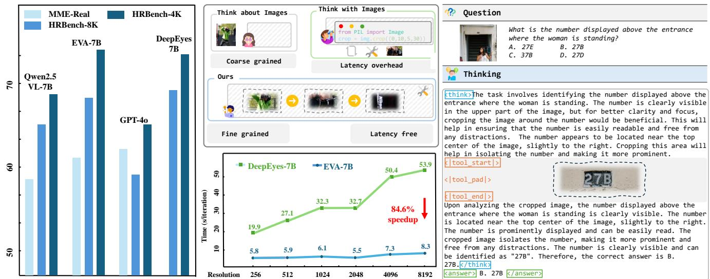

6 月 25 日：TuringViT 等视觉表征主线更新
本期聚焦通用视觉表征、视觉语言预训练与视频自监督中最值得跟进的论文，并保留 CCF A/B、OpenReview 与 arXiv 状态线索。
先读 TuringViT，判断它的线性注意力、数据策展和动态分辨率预训练是否能作为通用 ViT/VLM 编码器训练范式参考。第二篇读 REDI-Match，它把 VFM 语义蒸馏进旋转等变 encoder，比常见“冻结 VFM + 下游 decoder”更贴近 dense representation 的结构化迁移。第三篇读 Mind the Heads/HeRA，看 head-wise topology alignment 是否能解释或缓解 VLM 语言先验压过视觉证据的问题。HANCLIP、SAE 评估和 TheProfessor 适合接着读，分别覆盖 embedding 几何、可解释概念、无监督 VLM 蒸馏；CLSE/PriorTR、GeoLaV、EVA、AdaQ 可扫读方法图和消融。
论文索引
| 优先级 | 论文 | 类型 | 相关性 | 一句话理由 |
|---|---|---|---|---|
| P0 | TuringViT: Making SOTA Vision Transformers Accessible to All | arXiv 新增 / 视觉基础模型预训练 | 高 | 高效 ViT 预训练管线，直接面向 VLM/VLA 视觉编码器。 |
| P0 | REDI-Match: Rotation-Equivariant Distillation for Efficient and Robust Dense Matching | arXiv 新增 / VFM 蒸馏 + dense matching | 高 | 把 VFM 语义蒸馏到旋转等变编码器，适合看通用 dense 表征如何补几何归纳偏置。 |
| P0 | Mind the Heads: Topological Representation Alignment for Multimodal LLMs | arXiv 新增 / VLM 表征对齐 | 高 | 把跨模态对齐从层级推进到 attention-head 级别，和视觉 hallucination 直接相关。 |
| P1 | HANCLIP: A Family of Hyperbolic Angular Negation Vision Language Models | arXiv 新增 / CLIP 表征几何 | 高 | 用小规模 quadruplet 数据改造 CLIP 类 embedding 空间以处理否定语义。 |
| P1 | Evaluating the Interpretability of Sparse Autoencoders with Concept Annotations | arXiv 新增 + ECCV 2026 / VFM 可解释性 | 高 | 给 CLIP/DINOv2 上的 SAE 概念解释提供人类概念标注评估。 |
| P1 | The Professor: Multi-Teacher Unsupervised Prompt Distillation for Vision-Language Models | arXiv 新增 / 无监督 VLM 蒸馏 | 中高 | PromptKD 的多教师扩展，关注无标签图像上的 VLM 压缩。 |
| P2 | Spectral Evolution-Guided Token Pruning in Multimodal Large Language Models | arXiv 新增 + ECCV 2026 / MLLM 视觉 token | 中高 | 训练免费 token pruning，从跨层频谱演化衡量视觉 token 语义活性。 |
| P2 | Accelerating Multimodal Large Language Models with Prior-Corrected Token Reduction | arXiv 新增 + ECCV 2026 / MLLM 视觉 token | 中高 | 同样是训练免费 token reduction，但显式扣除模型无指令先验。 |
| P2 | Training-free Cross-domain Few-shot Segmentation via Robust Semantic Representation and Matching | arXiv 新增 + ECCV 2026 / DINOv3 迁移 | 中高 | 训练免费地重组 DINOv3 特征做跨域 few-shot segmentation。 |
| P2 | Boosting Text-Driven Video Segmentation via Geometry-Aware Distillation | arXiv 新增 + ECCV 2026 / 视频-语言几何蒸馏 | 中高 | 用单图新视角合成预训练和 3D prior 蒸馏增强文本驱动视频分割。 |
| P3 | Latent Visual States for Efficient Multimodal Reasoning | arXiv 新增 / latent visual reasoning | 中 | 让 MLLM 生成连续 latent visual states，和视觉 token/中间表征路线相关。 |
| 扫读 | Towards Fast and Effective Long Video Understanding of Multimodal Large Language Models via Adaptive Quasi-Gaussian Sampling | arXiv 新增 / 长视频 MLLM 采样 | 中 | 训练免费长视频帧采样，作为视频表征效率方向扫读。 |
主线阅读

TuringViT: Making SOTA Vision Transformers Accessible to All
高相关；详见方法、贡献和实验边界。
方法：高效 ViT 预训练管线，直接面向 VLM/VLA 视觉编码器

REDI-Match: Rotation-Equivariant Distillation for Efficient and Robust Dense Matching
高相关；详见方法、贡献和实验边界。
方法：把 VFM 语义蒸馏到旋转等变编码器，适合看通用 dense 表征如何补几何归纳偏置

Mind the Heads: Topological Representation Alignment for Multimodal LLMs
高相关；详见方法、贡献和实验边界。
方法：把跨模态对齐从层级推进到 attention-head 级别，和视觉 hallucination 直接相关

HANCLIP: A Family of Hyperbolic Angular Negation Vision Language Models
高相关；详见方法、贡献和实验边界。
方法：用小规模 quadruplet 数据改造 CLIP 类 embedding 空间以处理否定语义

Evaluating the Interpretability of Sparse Autoencoders with Concept Annotations
高相关；详见方法、贡献和实验边界。
方法：给 CLIP/DINOv2 上的 SAE 概念解释提供人类概念标注评估

The Professor: Multi-Teacher Unsupervised Prompt Distillation for Vision-Language Models
中高相关；详见方法、贡献和实验边界。
方法：PromptKD 的多教师扩展，关注无标签图像上的 VLM 压缩

Spectral Evolution-Guided Token Pruning in Multimodal Large Language Models
中高相关；详见方法、贡献和实验边界。
方法：训练免费 token pruning，从跨层频谱演化衡量视觉 token 语义活性

Accelerating Multimodal Large Language Models with Prior-Corrected Token Reduction
中高相关；详见方法、贡献和实验边界。
方法：同样是训练免费 token reduction，但显式扣除模型无指令先验

Training-free Cross-domain Few-shot Segmentation via Robust Semantic Representation and Matching
中高相关；详见方法、贡献和实验边界。
方法：训练免费地重组 DINOv3 特征做跨域 few-shot segmentation

Boosting Text-Driven Video Segmentation via Geometry-Aware Distillation
中高相关；详见方法、贡献和实验边界。
方法：用单图新视角合成预训练和 3D prior 蒸馏增强文本驱动视频分割

Latent Visual States for Efficient Multimodal Reasoning
中相关；详见方法、贡献和实验边界。
方法：让 MLLM 生成连续 latent visual states，和视觉 token/中间表征路线相关

Towards Fast and Effective Long Video Understanding of Multimodal Large Language Models via Adaptive Quasi-Gaussian Sampling
中相关；详见方法、贡献和实验边界。
方法：训练免费长视频帧采样，作为视频表征效率方向扫读